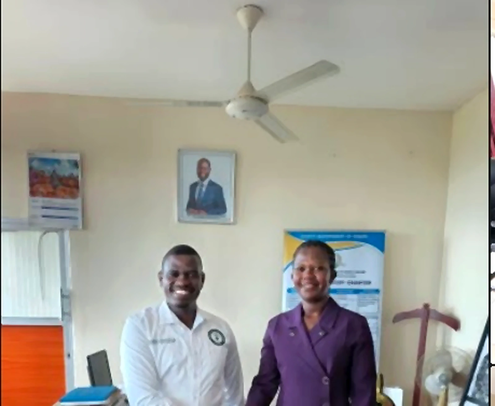
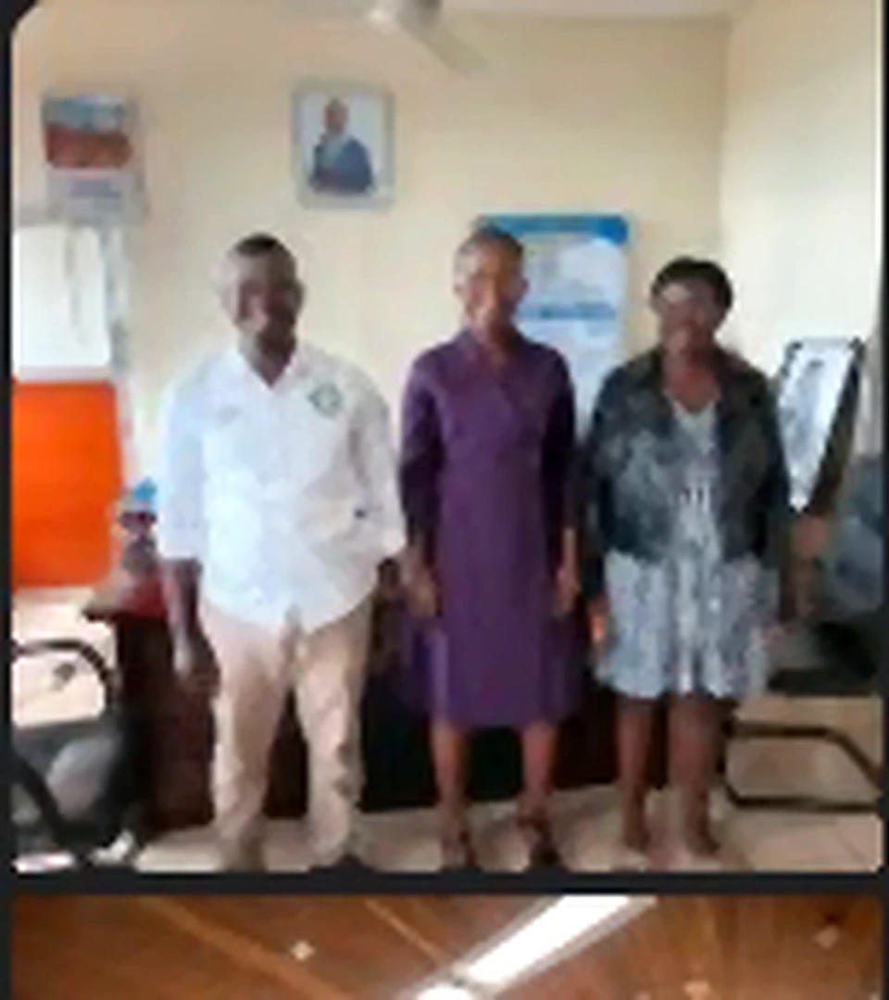
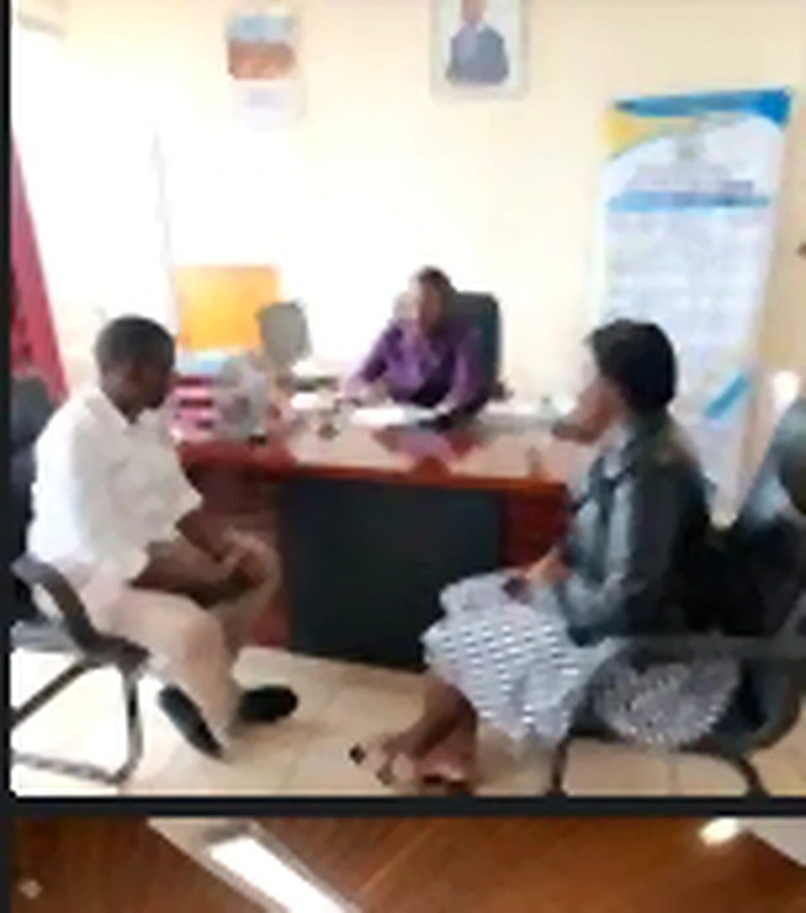
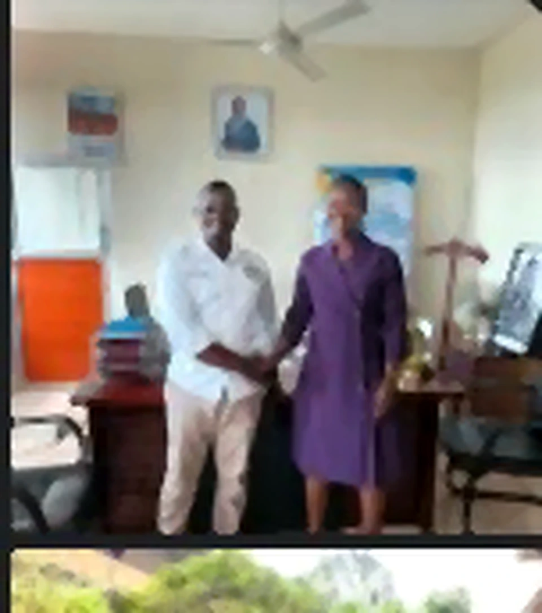

01
Biodiversity & restoration
Tree growing, environmental conservation and community stewardship that support healthier ecosystems and stronger climate resilience.
See field activity →
Kisumu County, Kenya
We are committed to supporting biodiversity and food security within vulnerable communities through practical climate action, environmental education and local partnerships.
Who we are
Green World Advocates is a Kisumu-based nonprofit working at the intersection of biodiversity, food security and community resilience.
Our approach is practical: build awareness, create local partnerships and support solutions that communities can see, use and sustain.
See how we work ↗Our ecosystem
Like any healthy ecosystem, our programmes reinforce one another—from greener neighbourhoods to stronger food systems and more engaged young people.
Tree growing, environmental conservation and community stewardship that support healthier ecosystems and stronger climate resilience.
See field activity →
Small-space farming, organic approaches and practical demonstrations that strengthen household food and income security.
Environmental sensitisation, waste awareness and cleaner-neighbourhood action that turn climate knowledge into visible change.


Using sport, public engagement and partnerships to bring young people into environmental and social action.
Food security
Urban and small-space farming can turn limited land into productive food systems, build practical skills and support stronger household resilience.
How we work
We keep the process simple, collaborative and grounded in the realities communities already understand.
Start with community priorities and lived environmental challenges.
Bring together schools, community groups, public institutions and development partners.
Translate awareness into farming, tree growing, clean-ups and youth-led activities.
Keep communities involved so environmental action becomes locally owned.
From their Facebook page
Real moments from meetings, community engagement and partnership activity. These original organisation images are kept here as documentary content rather than stretched into large hero sections.




Work with us
Contact
For partnerships, environmental programmes, community activities or collaboration opportunities, reach the organisation directly.